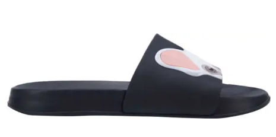

Las sandalias son un calzado ligero, generalmente sin tacón, consistente en una suela que se sujeta al pie con tiras de cuero o cintas quedando parte del pie al descubierto.
A continuacion estarán los productos disponibles en nuestra tienda
No. Imagen Tamaños Para 1 18 - 22 Caballero 2 20 - 24 Caballero 3 18 - 26 Dama 4 20 - 28.5 Dama 5  20 - 26.5 Dama